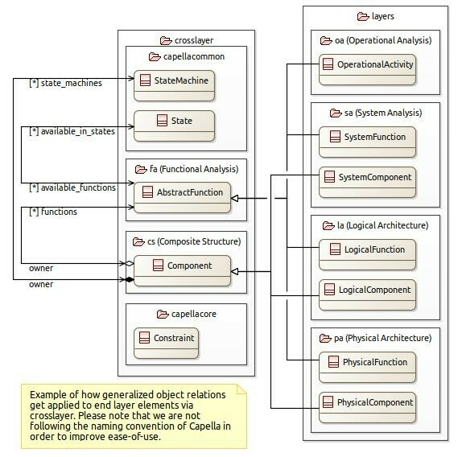

Introduction to py-capellambse API
py-capellambse provides access to model elements using a meta-model similar to the one of Capella. However in this meta-model we make a few simplifications. A collection of automated tests and design reviews help us to ensure that those simplifications don’t break compatibility with original Capella models (however coverage isn’t complete yet).
As you may know the meta-model behind Capella is layered. There are many packages involved and there is a long inheritance chain behind almost every model element. We are simplifying that by “flattening” the lower layers.
You may see an example of how that works in the figure below:

In the example above we see that LogicalFunction is a subtype of AbstractFunction, just like SystemFunction or OperationalActivity. Because of that, all of those subtypes can be .available_in_states or have a layer-specific structural owner, like LogicalComponent for LogicalFunction. Any layer-specific class that inherits from Component may also have state_machines.
The API reference part of this documentation provides you with the complete (as it is generated from the code base) list of available methods and attributes.
Layer-specific packages
The following packages enable working with model layers:
capellambse.model.layers.oa module - covers Operational Analysis layer.
capellambse.model.layers.ctx module - covers System Analysis layer.
capellambse.model.layers.la module - covers Logical Architecture layer.
capellambse.model.layers.pa module - covers Physical Architecture layer.
Cross-layer packages
The following packages enable all (almost) of the layer packages:
capellambse.model.crosslayer.fa module - covers Functional Analysis concerns, defines things like AbstractFunction or FunctionalExchange
capellambse.model.crosslayer.cs module - covers Composite Structure concerns, defines things like Component
capellambse.model.crosslayer.capellacommon module - covers common concerns, defines things like StateMachine, State
capellambse.model.crosslayer.information module - covers Information concerns, defines things like Class, DataPkg, ExchangeItem
Extension packages
capellambse.extensions.reqif module - provides means for working with ReqIF Requirements within Capella model.
capellambse.extensions.pvmt module - provides means for working with object attributes created with PVMT package.